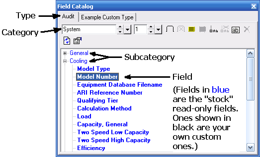

|
Field Catalog (View Menu) Proposal Maker Main Topics (List) Proposal Maker Menus (List) |
  
|
Field Catalog (View Menu)
Proposal Maker Main Topics (List) Proposal Maker Menus (List)
|
Field Catalog (View Menu) Proposal Maker Main Topics (List) Proposal Maker Menus (List) |
|
Icon: Keyboard Shortcut: F6
The Field Catalog window lets you insert fields into the document that are automatically updated to reflect the data from the current project. The Field Catalog window is pictured below with the Model Number field in Audit's System category selected. Also see the Adding Custom Fields and Field Propertiestopics.

To insert a text field into a document:
1.Find the field you want. The fields in the Field Catalog database are arranged into a heirarchy that includes Types, Categories, Subcategories, and individual fields. To find the field you want, first select the Type, then the Category, then click the plus sign to the left of the Subcategory and find your field.
2.Drag and drop it onto the document. Click and drag the field onto a place on the document where it is already possible to enter text. In other words, before you insert the field you must be able to put the cursor on the document at the place where you want the field to go.
3.Or insert without drag and drop. You can also insert a text field by holding the Ctrl key down and double clicking on the field in the Field Catalog. The field will be inserted at the current position of the cursor.
4.Special note about headers and footers. To insert a field into the header or footer, first activate the header or footer, either by clicking in the general area of the header or footer, or by clicking the menu "View | Header" or "View | Footer." Then hold the Ctrl key down and double click on the field in the Field Catalog that you want to insert (you cannot add the field by drag and drop). The field will be inserted into the header or footer at the current cursor position.
To insert a picture field: Do the same things as described above for a text field, but note that unlike text fields, picture fields insert "As Floating" by default. To insert a picture field "As Character," hold the Ctrl key down while you drag and drop (or Ctrl+Double Click, as described above for text fields).
To add a custom field to the Field Catalog: Click the Add Field icon ( ), then fill in the fields on the Add Catalog Field dialog.
To set default properties for a field: Select the field you want and then click the Field Properties button ( ) in the Field Catalog's toolbar.